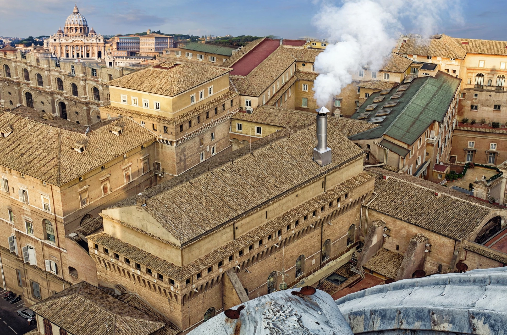

Papal conclave

A papal conclave is the gathering of the College of Cardinals convened to elect a new pope, the bishop of Rome and head of the Roman Catholic Church. The word derives from the Latin cum clave — "with a key" — reflecting the cardinals' seclusion under lock until a decision is reached.
History
Papal elections were originally conducted by clergy and laity of Rome in various forms; in 1059 Nicholas II reserved the choice to the cardinal-bishops, and by 1179 the whole College of Cardinals voted. The conclave system proper was imposed by Gregory X in 1274, prompted by the nearly three-year vacancy at Viterbo (1268–71), during which exasperated officials had locked the cardinals in and removed the roof. Modern rules stem mainly from John Paul II's Universi Dominici gregis (1996), with amendments by Benedict XVI.
Procedure
After a vacancy, cardinals under the age of 80 on the day the see falls vacant are eligible electors. They meet in the Sistine Chapel in the Vatican, take oaths of secrecy, and are cut off from outside contact. Ballots are held up to four times a day; election requires a two-thirds majority. After each round the ballots are burned: black smoke (fumata nera) signals no result, white smoke (fumata bianca) success. The dean asks the elected man whether he accepts and what name he will take; the senior cardinal deacon then proclaims "Habemus papam" from the balcony of St Peter's Basilica, and the new pope gives his first Urbi et Orbi blessing.
Recent conclaves have been short: Benedict XVI was elected in 2005 and Francis in 2013, each in about two days.
See also: College of Cardinals, Pope, Sistine Chapel, Habemus papam.